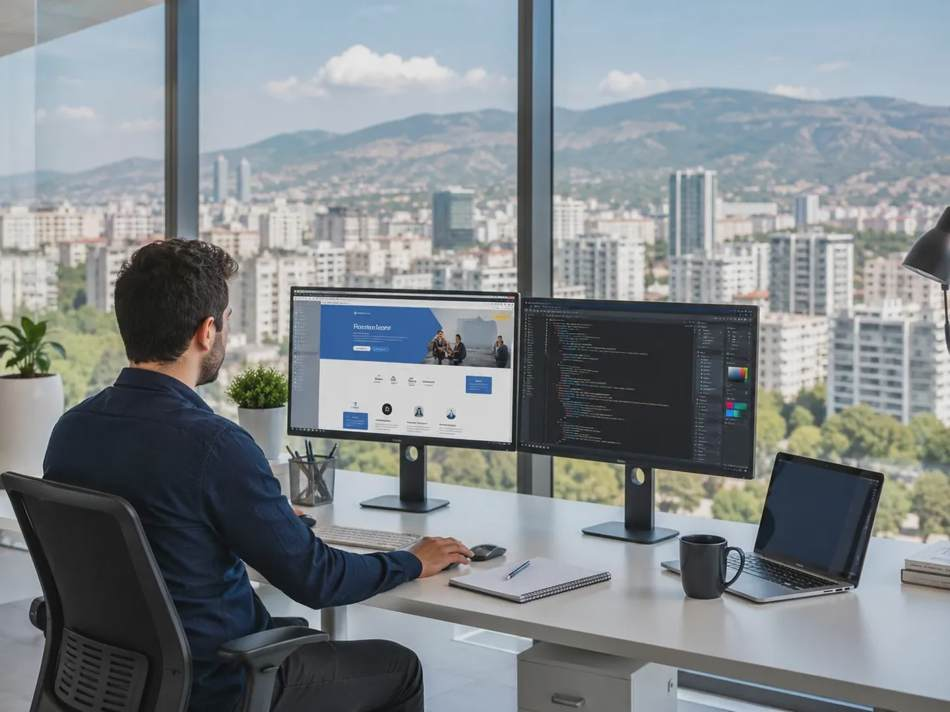
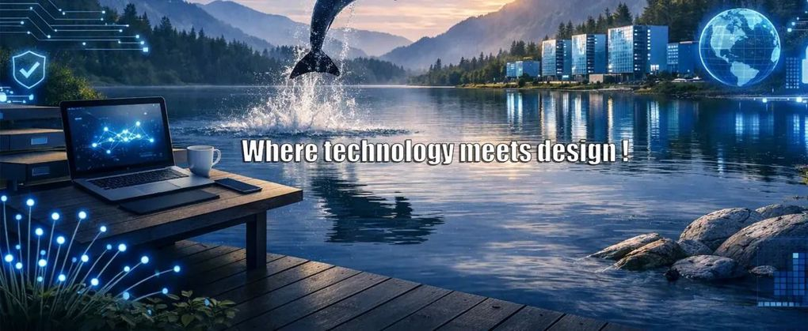
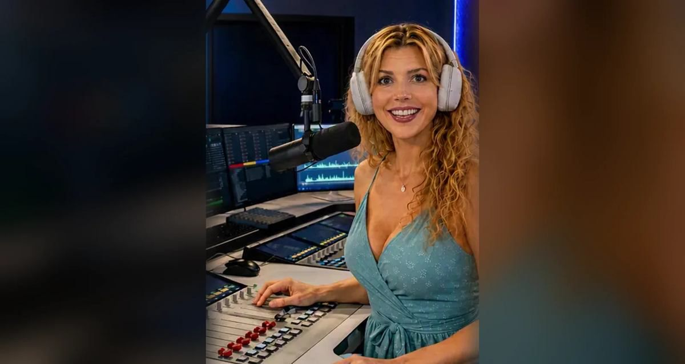
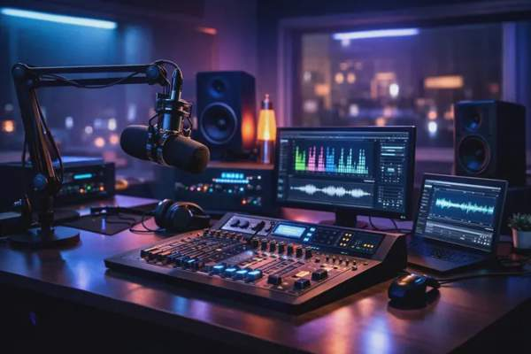

Creative Systems
for a Connected World.
Bij SITAKS / Dolphin Productions komen technologie, creativiteit, audio, design en digitale oplossingen samen. Eén herkenbare futuristische wereld, met ruimte voor iedere specialisatie.
Ontdek SITAKS.
Vijf eigen onderdelen, allemaal in dezelfde Connected World-stijl. Kies een blok voor een volledige pagina.

IT & Connectiviteit
Wereldwijde verbindingen, slimme IT-oplossingen en een doordachte infrastructuur.
Ontdek dit onderdeel ↗
Webdevelopment
Websites, applicaties en digitale oplossingen met aandacht voor snelheid en gebruiksgemak.
Ontdek dit onderdeel ↗
Grafisch ontwerp
Visuele creaties, digitale identiteit en een eigen creatieve studio.
Ontdek dit onderdeel ↗
Radio / Webradio
Studio, uitzendingen en een speler uitsluitend onder Audio & Broadcasting.
Ontdek dit onderdeel ↗
Audio & productie
Jingles, opnames, sounddesign en de bibliotheek met geluidsfragmenten.
Ontdek dit onderdeel ↗
Peter Poels
Met 30+ jaar ervaring in technologie, analyse en digitale oplossingen verbindt Peter Poels technisch inzicht met een praktische aanpak.
Hier komt de definitieve professionele voorstelling, met een afzonderlijk profiel en CV.
Meer over Peter Poels ↗Een idee voor morgen?
Van de eerste analyse tot een afgewerkt project: ontdek wat SITAKS voor je kan betekenen.